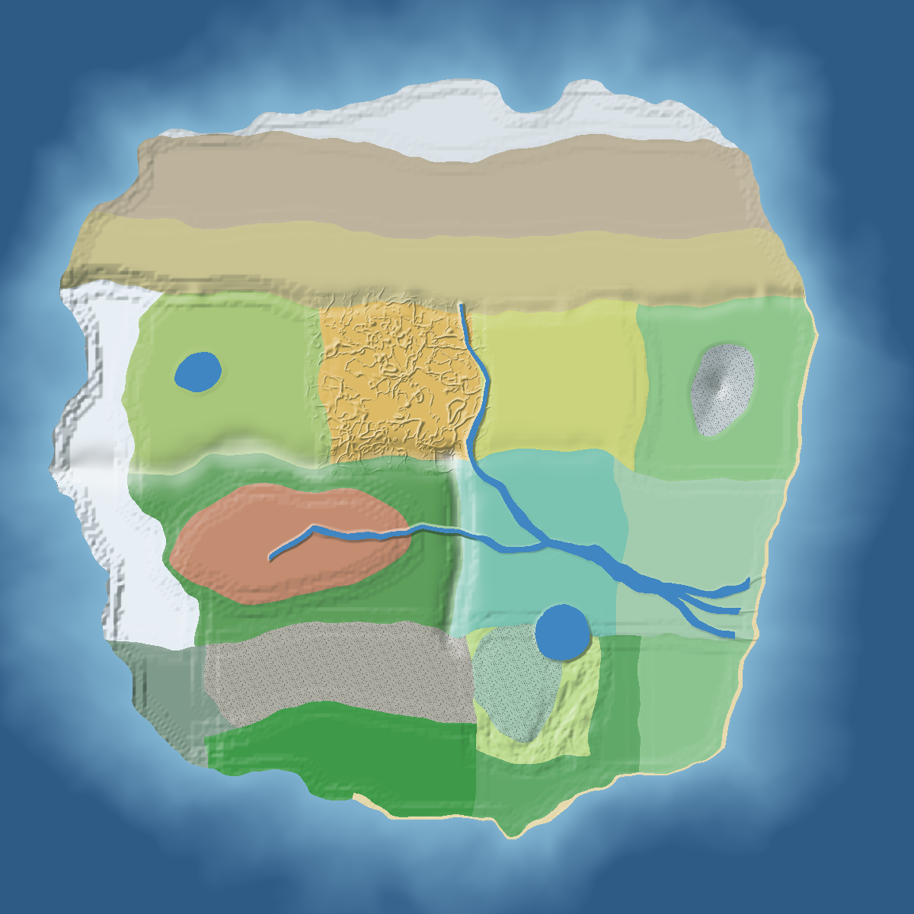

| 1 | Qingshui village (spawn) 564, -389 · central plains · Y 67-69 World spawn. Flat central plains by the yellow river, at the crossroads of four zones: every direction is a road out. |
| 2 | Yellow river ferry inn 336, -492 · central plains · Y 57-77 · water 20% First stop west of the village: the ferry over the yellow river towards Chang-An. |
| 3 | Shaolin Temple 1733, -914 · central plains · Y 67-67 Song mountain is in Henan, the central plains: the heart of the orthodox world, a day east of spawn. |
| 4 | Mount Hua Sect -470, -217 · loess plateau · Y 83-130 Hua is just east of Xi’an: cliffs of the loess plateau, near Chang-An. Built into the cliff. |
| 5 | Wudang Sect -294, 642 · bamboo mountains · Y 125-130 Wudang is in north-west Hubei: the bamboo mountain rim above the Hubei waterlands. |
| 6 | Emei Sect -2403, 2014 · bamboo mountains · Y 108-116 Emei is in south-west Sichuan: the far bamboo rim of the red basin. |
| 7 | Qingcheng Sect -1518, 400 · bamboo mountains · Y 94-114 Qingcheng is near Chengdu: the north rim of the red basin. |
| 8 | Kunlun Sect -4472, -539 · western snow peaks · Y 160-171 Kunlun is the western mountains: the snow peaks, far and high. |
| 9 | Kongtong Sect -1468, -1603 · loess plateau · Y 85-100 Kongtong is in Gansu: the north-west corner of the loess plateau. |
| 10 | Diancang Sect -1292, 2807 · stone forest · Y 100-100 Diancang is in Yunnan: the stone forest. |
| 11 | Beggars’ Union 1450, 1901 · hubei waterlands · Y 58-65 · water 24% Their great hall by Dongting lake: the north shore of the great lake. |
| 12 | Heavenly Demon Cult -4623, -1791 · western snow peaks · Y 174-175 The Ten Thousand Mountains, beyond the frontier: the north end of the western snow peaks, the most remote corner. |
| 13 | Blood Cult -2073, 3759 · unnam jungle · Y 80-80 Hidden in the southern jungle, far from the orthodox sects. |
| 14 | Jin (North Sky HQ) -1845, -3316 · cold desert · Y 88-90 |
| 15 | Namgung 745, 1460 · hubei waterlands · Y 65-65 |
| 16 | Dokgo -4681, 700 · western snow peaks · Y 175-175 |
| 17 | Moyong -2735, -732 · qinghai plateau · Y 132-132 |
| 18 | Jegal 2980, -86 · shandong hills · Y 82-82 |
| 19 | Sama 997, -1454 · central plains · Y 67-67 |
| 20 | Seomun 3071, 2707 · southeast coast · Y 78-78 |
| 21 | Dang (Tang clan) -2523, 1397 · red basin · Y 68-78 |
| 22 | Paeng 1995, -440 · central plains · Y 67-67 |
| 23 | Hwangbo -802, -1127 · loess plateau · Y 72-100 |
| 24 | Yeon 162, -2614 · frozen steppe · Y 82-82 |
| 25 | Ha 1504, 3332 · rice terraces · Y 76-108 |
| 26 | Silent Night 1176, -4190 · frozen tundra · Y 82-85 |
| 27 | Iron Castle 3123, -3071 · cold desert · Y 87-90 |
| 28 | Broken Fist -2192, 2823 · stone forest · Y 100-100 |
| 29 | Mount Tai shrine (sacred mountain) 3452, -883 · sacred mountain · Y 196-209 |
| 30 | Fortified pass gate 1418, -1924 · frozen steppe · Y 74-79 |
| 31 | Delta port 3199, 1810 · river delta · Y 50-64 · water 78% |